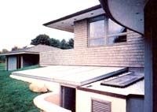
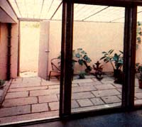
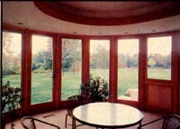
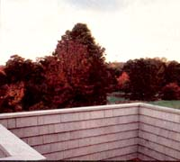
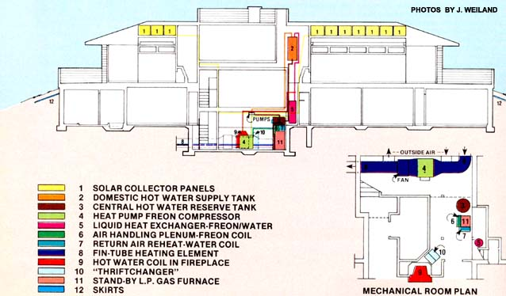

Landis And Pamela Gores' Semi-Subterranean
By the Mother Earth News editors
January/February 1978
Question: What has four bedrooms, three fireplaces, two greenhouse-courtyards, a "buried earth loop", and ten rooftop collectors? Answer: Landis and Pamela Gores's new house in New Canaan, Connecticut!
"HOUSE FOR ALL SEASONS"
New Canaan, Connecticut architect Landis Gores, F.A.I.A., and his long-time friend and energy consultant Paul Sturges (of Sturges Heat Recovery, Inc., Stone Ridge, New York) have been convinced for the past 25 years or so that the best way to design low heating, cooling, and maintenance costs into a building is to make the structure wholly subterranean. Architectural trends being what they are, however, the Gores/Sturges team has had to be content (over the past two and a half decades) designing open, airy, glass-filled, expensive-to-heat-and-maintain above -ground houses ... just the kind their customers wanted.
Three years ago, though, it occurred to Gores and Sturges that they could have the best of both worlds if they were to [1] build an expansive, open, "glassy" structure on top of an energy-efficient, low-maintenance underground house ... and [2] use fireplaces, solar collectors, sunken greenhouses, and a heat pump to warm (and cool) the piggyback structure. So Landis Gores, his wife Pamela, and friend Paul Sturges designed-and contracted the construction of-just such a dwelling ... a dwelling that Landis proudly refers to as his "House For All Seasons".
HEAT FROM THE EARTH
Much of the space heat for Landis Gores's new 4,000-square-foot house comes either directly or indirectly from the earth itself. Approximately two-thirds of the dwelling's living space is located below ground level, to take advantage of the surrounding earth's more-or-less constant 52°-55°F temperature. Thus, even when the air outside is below freezing, the underground portion(s) of the Gores house need only be warmed 15° to 20° F to be kept in the "comfort" zone. (See the Plowboy Interview with Andy Davis in MOTHER NO. 46 for a more detailed discussion of this phenomenon.)
Then too, most of the supplemental Btu's that are used to heat the "House For All Seasons" come from the earth by way of a unique buried-loop/heat-pump arrangement. Underneath the yard is a 300-long, 24"-diameter pipe (a "buried earth loop") through which air continually circulates. In the winter, a heat pump is used to extract thermal energy from the circulating 550 air and provide warmth for space heating. (The 55° air is, of course, cooled by this process. It becomes "heated" again to its normal temperature of 55° on its next circuit of the buried earth loop. See MOTHER NO. 44, page 99, for a more complete discussion of how a heat pump operates.) In the summer, the 550 air is used "as is"-straight from the buried loop-to air-condition the house.
Once warm air is pumped into the belowground portions of the Gores household, it tends to stay warm a mighty long time ... thanks to the hundreds of tons of "dry dirt insulation" that surround the dwelling's lowermost floors. (Gores and Sturges took the time to place a waterproof skirt-which is located six to eight inches below ground and extends five feet away from the house's walls-all the way around the dwelling' By thus keeping the earth around the building dry, Sturges and Gores expect that they can hold the underground heat loss to "almost zero".)
Even the aboveground portion of the Gores dwelling tends to retain heat exceptionally well, thanks to the designer's use of [1] triple-thick windows and glass doors and [2] anywhere from 3-1/2" to 10" of fiberglass insulation in the structure's walls.
HEAT FROM THE SUN
Additional space heat for the "House For All Seasons" comes from a pair of sunken greenhouses (total area: 600 square feet) which adjoin two of the dwelling's four bedrooms. These large "grow holes"-which are located on the home's south (i.e., "front") side-are covered with translucent fiberglass skylights in the winter and thus tend to act as passive solar collectors. (When heat from the greenhouses is available and wanted, the large sliding-glass doors that separate the bedrooms from the mini-conservatories can be opened. When the warmth is either unavailable or unwanted, the doors stay closed.)
In the summer, the fiberglass skylights can be removed from the greenhouses, instantly transforming them into sunken courtyards.
SOLAR-HEATED WATER
Gores and Sturges decided on a conventional "active-type" solar heating installation (employing a ten-panel array of collectors on the house's roof and the usual pumps and controllers) to provide for the semi-subterranean home's domestic hot water needs. (This particular installation is somewhat unconventional in that the automatic controls will drain all the water but of the collectors any time the outside temperature goes below the point at which the water would freeze.)
The rooftop collectors tie into a 120-gallon hot water storage tank which-in turn-ties into a 275-gallon "reserve" container for even more storage capacity. Thus, at any one time some 395 gallons of hot water are available for bathing, dishwashing, etc. If Ole Sol heats more water than is needed for domestic uses, the excess hot water can be shunted through a heat exchanger located in the air-handling plenum of the space-heating system, reducing the load on the heat pump. Conversely, when there's a need for more hot water than Ole Sol can supply (because of foul weather, say), the heat pump can "make up" the needed Btu's via the same heat-exchange unit.
FIREPLACES FOR EXTRA WARMTH
Three fireplaces-each equipped with special energy-saving devices-supplement the space heat provided by the heatpump/buried-loop system and the hotwater calories provided by the active solar heating installation. The fireplaces supply additional space heat both by radiation through tempered glass doors and by convection through Thriftchanger stackheat recovery units (manufactured by Sturges Heat Recovery, Inc., P.O. Box 397, Stone Ridge, N.Y. 12484). Also, the fireplace on the lowest level of the house feeds supplemental Btu's to the waterheating system via a Blazing Showers chimney coil setup. (See the story on pages 60-62 of MOTHER NO. 42 for a complete write-up on the Blazing Showers unit.)
BACKUP SYSTEMS
In addition to the mutually reinforcing space-and water-heating systems described above, Landis Gores and Paul Sturges have installed a propane-powered electrical generator in the house to supply "juice" to the heat pump, fans, lights, etc., during periods of electrical outage. (Landis says that sometime in the future he may replace this setup with a wind generator and battery bank.) Likewise, the designers installed a liquid-propane-fired furnace in the house as a backup heat source for those times when neither wood (for the fireplaces), electricity (for the heat pump), nor sunlight are available in sufficient quantity.
PERFORMANCE PLUS
So far, however, Landis and Pam Gores (who have made the "House For All Seasons" their home) haven't had to use either the propane generator or the backup furnace to supplement the heat provided by the dwelling's earth loop, greenhouses, fireplaces, and solar panels. In fact, shortly before press time (late November'77) Landis Gores wrote us to say: "So far, all mechanisms seem to be doing their part commendably. To date, we have relied largely on passive solar heat for warmth and active solar heat for hot water, but when the rain has persisted for several days the heat pump and condenser have filled in admirably." Landis adds that "a pair of Thrift changer fireplace fires have overperformed to the extent that we have had to open some windows!"
SHORTCOMINGS
All this is not to say that Landis Gores and Paul Sturges have finally succeeded in creating the energy-efficient underground "dream house" that they've wanted to design and build for the last 25 years. In the first place, the " House For All Seasons " is not a true subterranean dwelling, any more than-say-a house with a basement apartment is. Nor is the capacious all-seasons house totally independent (for its space heating and hot water) of fossil fuel energy ... any more than an all-electric house with several fireplaces is.
Then too, Messrs. Sturges and Gores didn't quite use "state of the art" thinking when they applied one inch of foam insulation to the interior of the belosw-grade portion of the home's north wall in addition to two inches of foam insulation on that wall's exterior. (Malcolm Wells, Andy Davis, and other "underground house" experts now agree that, for maximum thermal efficiency, insulation should be applied to the exterior-not the interior-of a subterranean dwelling's walls.)
 Still and all, we think the Gores/Sturges team has created one heck of a beautiful, spacious, energy-efficient suburban dwelling in their ""House For All Seasons"". We only wish more architects and energy consultants across the country would begin to follow their lead |
 |
 |
|
 |
 |
 |